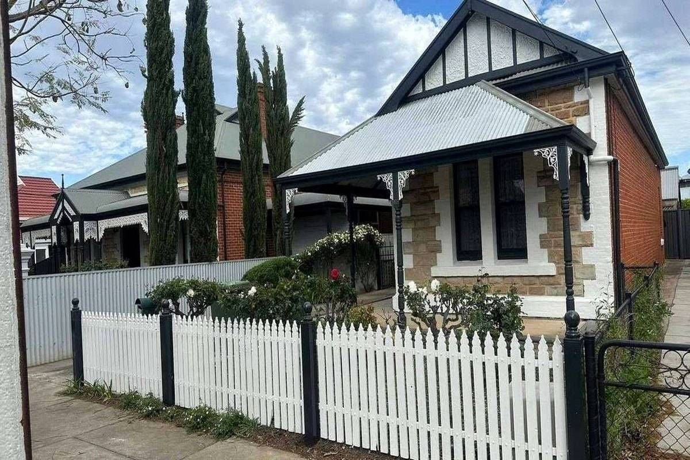

Look
The surfaces decide the prep — the job is looked at before a price is given, so what is quoted is what has to be done.
Walls, doors and trim painted with the prep done first, so the finish still looks right in two years and not just on the day the tape comes off.

Local work done properly: interior repaints and the repairs and maintenance that go with it, plus the exterior work that keeps a place weathertight.
Walls and ceilings in low-sheen or wash-and-wear, cut in by hand and rolled for an even finish. Furniture moved to the middle and covered, floors protected, and the room left ready to use at the end of the day rather than half-done.
Weatherboards, render, eaves and fascia washed, filled and primed before topcoats. Anything soft or failing gets scraped back to sound timber first — paint straight over rot and it is back within the season.
Doors taken off and sprayed or brushed, frames, architraves and skirting sanded, filled and recoated. Same crew start to finish, so the standard set on the first door is the one kept on the last.
Colour matched to your sample, one wall or a whole room, with a clean edge where the colour stops. Tested on the wall before committing, because a colour chip always looks different in daylight.
Patch and repaint, with water stains sealed before the topcoat so they do not bleed back through. Anywhere the ceiling has sagged or cracked gets repaired and checked, not just painted over.
Fast repaints between tenants to a set date, scoped to the bond standard rather than a full renovation. Priced after the property is looked at, so the quote matches what has to be done.
The same surfaces, before and after — prep, masking, cut-in and the finished room.
Three stages, and the first one decides how the other two turn out.
The surfaces decide the prep — the job is looked at before a price is given, so what is quoted is what has to be done.
Filling, sanding, masking and priming before any topcoat goes on. This is the part no one sees and the part that decides the finish.
Two coats, furniture back where it belongs, floors clean and no tape or drop sheets left behind.
A local Ballina business, not a franchise call centre.
Fine Finish Painting Northern Rivers is a Ballina business painting houses and units across the Northern Rivers. Most of the work is interior repaints and the maintenance that goes with them: a room or two at a time, a whole house before it goes on the market, or a rental turned around between tenants on a fixed date.
The work is priced after the site is looked at, not over the phone. Surfaces tell you what the job needs — how much filling and sanding a wall will take, whether an exterior needs a full prime or just the failing boards scraped back, and what colour is actually going to work in that light.
Paint is supplied or you can provide your own, whichever suits. Either way the prep does not change: sanding, filling, masking and priming happen before the first topcoat, because that is the order that produces a finish which still looks right a couple of years on.
No job is left half-finished for another day. Rooms are worked to completion, furniture goes back, floors are cleaned and the tape comes down — the place is handed back ready to live in, not ready for the next trade.
Repeat work and referrals are most of the diary, which is the simplest way of saying the standard is kept: if the finish was not right, the calls would not come back.
The three that come up before most jobs, and a couple more besides.